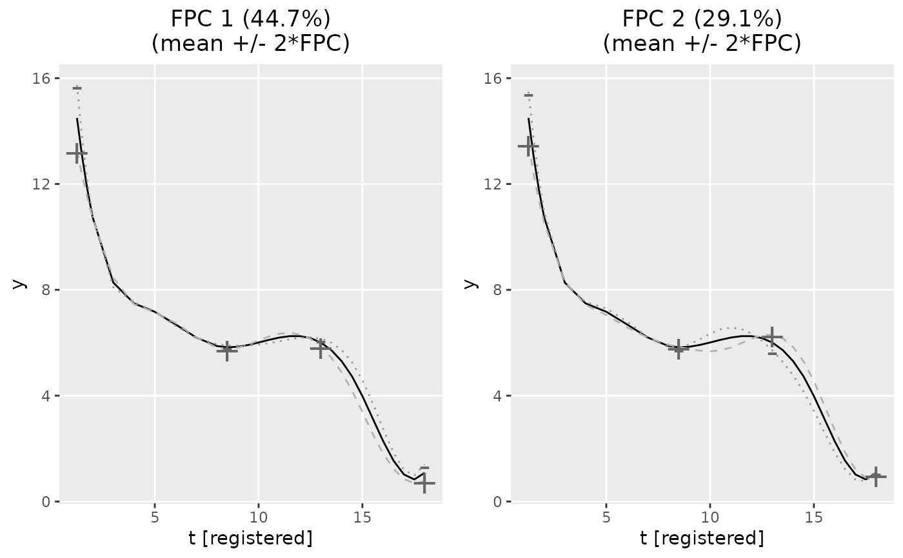
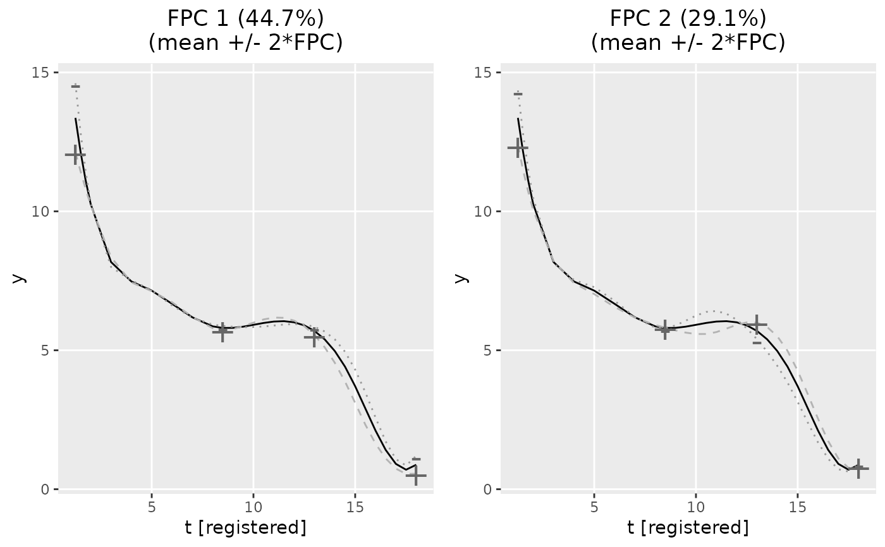

gfpca_twoStep.RdFunction for applying FPCA to different exponential family distributions.
Used in the FPCA step for registering functional data,
called by register_fpca when fpca_type = "two-step".
The method implements the `two-step approach` of Gertheiss et al. (2017)
and is based on the approach of Hall et al. (2008) to estimate functional
principal components.
The number of functional principal components (FPCs) can either be specified
directly (argument npc) or chosen based on the explained share of
variance (npc_criterion). Using the latter, we approximate the overall
variance in the data Y with the variance represented by the smoothed
covariance surface estimated with cov_hall.
Note that the Eigenvalue decomposition of this covariance surface
sometimes leads to a long tail of subordinate FPCs with small eigenvalues.
Such subordinate dimensions seem to often represent phase rather than
amplitude variation, and can be cut off by specifying the second element of
argument npc_criterion.
This function is an adaptation of the implementation of Jan
Gertheiss for Gertheiss et al. (2017), with focus on higher (RAM) efficiency
for large data settings.
gfpca_twoStep(
Y,
family = "gaussian",
npc = NULL,
npc_criterion = NULL,
Kt = 8,
t_min = NULL,
t_max = NULL,
row_obj = NULL,
index_significantDigits = 4L,
estimation_accuracy = "high",
start_params = NULL,
periodic = FALSE,
verbose = 1,
...
)| Y | Dataframe. Should have values id, value, index. |
|---|---|
| family | One of |
| npc, npc_criterion | The number of functional principal components (FPCs)
has to be specified either directly as |
| Kt | Number of B-spline basis functions used to estimate mean functions
and functional principal components. Default is 8. If
|
| t_min | Minimum value to be evaluated on the time domain. |
| t_max | Maximum value to be evaluated on the time domain. |
| row_obj | If NULL, the function cleans the data and calculates row indices.
Keep this NULL if you are using standalone |
| index_significantDigits | Positive integer |
| estimation_accuracy | One of |
| start_params | Optional start values for gamm4. Not used if
|
| periodic | Only contained for full consistency with |
| verbose | Can be set to integers between 0 and 4 to control the level of detail of the printed diagnostic messages. Higher numbers lead to more detailed messages. Defaults to 1. |
| ... | Additional arguments passed to |
An object of class fpca containing:
Information that FPCA was performed with the 'two-step' approach, in contrast to registr::fpca_gauss or registr::bfpca.
Time vector over which the mean mu was evaluated.
The resolution is can be specified by setting index_significantDigits.
Cutpoints for B-spline basis used to rebuild alpha.
\(D \times npc\) matrix of estimated FPC basis functions.
Estimated variance of the FPC scores.
Sum of all (nonnegative) eigenvalues of the smoothed
covariance surface estimated with cov_hall. Can be used as an
approximation for the total variance present in Y to compute the
shares of explained variance of the FPC scores.
number of FPCs.
\(I \times npc\) matrix of estimated FPC scores.
Estimated population-level mean.
Estimated population-level mean. Same value as alpha but included for compatibility
with refund.shiny package.
Always NA but included for full consistency
with fpca_gauss and bfpca.
FPC approximation of subject-specific means, before applying the response function.
The observed data.
binomial, for compatibility with refund.shiny package.
Estimated parameters of the mixed model.
For family = "poisson" the values in Y are rounded before
performing the GFPCA to ensure integer data. This is done to ensure reasonable
computation times. Computation times tend to explode when estimating the
underlying high-dimensional mixed model with continuous Poisson data based
on the gamm4 package.
If negative eigenvalues are present, the respective eigenfunctions are dropped and not considered further.
Gertheiss, J., Goldsmith, J., & Staicu, A. M. (2017). A note on modeling sparse exponential-family functional response curves. Computational statistics & data analysis, 105, 46--52.
Hall, P., Müller, H. G., & Yao, F. (2008). Modelling sparse generalized longitudinal observations with latent Gaussian processes. Journal of the Royal Statistical Society: Series B (Statistical Methodology), 70(4), 703--723.
Alexander Bauer alexander.bauer@stat.uni-muenchen.de, based on work of Jan Gertheiss
data(growth_incomplete)
# estimate 2 FPCs
fpca_obj = gfpca_twoStep(Y = growth_incomplete, npc = 2, family = "gaussian")
#> Using the first 2 FPCs which explain 73.8% of the (approximated) total variance.
plot(fpca_obj)

# estimate npc adaptively, to explain 90% of the overall variation
fpca_obj2 = gfpca_twoStep(Y = growth_incomplete, npc_criterion = 0.9, family = "gaussian")
#> Using the first 4 FPCs which explain 95.1% of the (approximated) total variance.
plot(fpca_obj2, plot_FPCs = 1:2)
